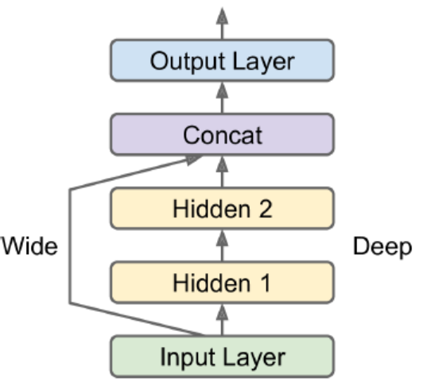
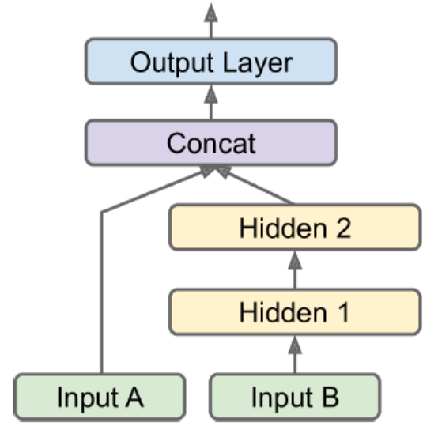

Biological to Artificial Neurons
Threshold Logic Unit (TLU)
input/output: numbers. compute a weighted sum of its inputs and then applies step function.
When all neurons in a layer are connected to every neuron in the previous layer, this layer is called a fully connected layer, or a dense layer.
perceptron learning rule
$w_{i,j}^{t+1} = w_{i,j}^{t} + \eta(y_j-\hat{y}_j)x_i$
Multilayer Perceptron (MLP)
The layers close to the input layer are called the lower layers.
Automatically computing gradients is called automatic differentiation, or autodiff. The one used by BP is called reverse-mode autodiff, suited when the function has many variables and few outputs.
It is important to init all hidden layers’ connection weights randomly (non-zero). This breaks the symmetry, and let different neurons in different layers learn different patterns.
Regression MLPs
No activation function should be used for the output layer unless we want to guarantee they fall in a range.
The loss function to use is typically the MSE. If there are a lot of outliers, we can use MAE or Huber loss.
Classification MLPs
Multiclass classification: use softmax activation for the whole output layer, which ensures all estimated probabilities are between 0 and 1 and they add up to 1.
Cross-entropy loss (log loss) is a good choice.
Implementing MLPs with Keras
Two implementations of the Keras API: multibackend Keras and tf.keras (supports TF-specific features)
import tensorflow as tf
from tensorflow import keras
tf.__version__ #2.0.0
keras.__version__ #2.2.4-tfBuild using MNIST.
fashion_mnist = keras.datasets.fashion_mnist
(X_train_full, ytrain_full), (X_test, ytest) = fashion_mnist.load_data()
X_train_full.shape
xval, xtrain = X_train_full[:5000]/255., X_train_full[5000:]/255.
yval, ytrain = ytrain_full[:5000], ytrain_full[5000:]
class_names = ["T-shirt", "Trouser", "Pullover", "Dress", "Coat", "Sandal", "Shirt", "Sneaker", "Bag", "Ankle boot"]Sequential API
E.g.: Classification Problem for a image problem.
Build a Model for Classification
model = keras.models.Sequential()
# similar to X.reshape(-1, 1)
model.add(keras.layers.Flattern(input_shape=[28,28]))
model.add(keras.layers.Dense(300, activation="relu"))
model.add(keras.layers.Dense(100, activation="relu"))
model.add(keras.layers.Dense(300, activation="softmax"))The first Dense layer has 28*28*300 connection weights, plus 300 bias terms. It is recommended but not required to specify the input shape. If not specified, certain operations such as printing the model summary or saving the model will not allowed. Keras will create the model when real data is fed or build() is called.
Instead of adding layers one by one, we can create our model by passing a list.
model = keras.models.Sequential([
keras.layers.Flatter(),
keras.layers.Dense()
])Get a model’s list of layers.
layers = model.layers
hidden1 = layers[1]
hidden1.nameGet parameters of a layer.
w, b = hidden1.get_weights()
w.shape # (784, 300)Compile the model
model.compile(loss="sparse_categorical_crossentropy",
optimizer="sgd",
metrics=["accuracy"])If we want to convert sparse labels (class indices) to one hot vector labels, use the keras.utils.to_categorical() function. To go the other way round, use the np.argmax(axis=1).
Train and Evaluate
history = model.fit(xtrain, ytrain, epochs=30,
validation_data=(xval, yval))
model.evaluate(xtest, ytest)If classes are skewed, use class_weight argument, which would give a larger weight to underrepresented classes. Similarly, if some instances were more important (e.g., labeled by experts), use sample_weight argument.
Calling fit() again we resume where the models left off.
Plot the metric curves.
pd.DataFrame(history.history).plot(figsize=(8,5))
plt.grid(True)
plt.gca().set_ylim(0,1)
plt.show()When plotting the training curve, it should be shifted by half an epoch to the left. The training error is computed using a running mean during each epoch, whereas the validation error is computed at the end of each epoch.
Hyperparameters to check: learning rate, optimizer, number of layers, number of neurons, activation function
Make Prediction
y_proba = model.predict(xtest)
y_proba.round(2)
y_pred = model.predict_classes(xtest)E.g.: Regression Problem.
Preprocess For Regression
xtrain_full, xtest, ytrain_full, ytest = train_test_split(data, target)
xtrain, xval, ytrain, yval = train_test_split(xtrain_full, ytrain_full)
scaler = StandardScaler()
xtrain = scaler.fit_transform(xtrain)
xval = scaler.transform(xval)
xtest = scaler.transform(xtest)Model for Regression
model = keras.models.Sequential([
keras.layers.Dense(30, activation="relu", input_shape=xtrain.shape[1:])
keras.layers.Dense(1)
])
model.compile(loss="mean_squared_error", optimizer="sgd")
hist = model.fit(xtrain, ytrain, validation_data=(xval, yval))
mse_test = model.evaluate(xtest, ytest)
y_pred = model.predict(xtest)Functional API
Sequential models make data go through the full stack of layers. The workflow can be distorted by wide&deep neural network.
input_ = keras.layers.Input(shape=xtrain.shape[1:])
hid1 = keras.layers.Dense(30, activation="relu")(input_)
hid2 = keras.layers.Dense(30, activation="relu")(hid1)
concat = keras.layers.Concatenate()([input_, hid2])
output = keras.layers.Dense(1)(concat)
model = keras.Model(inputs=[input_], outputs=[output])If we want to send a subset of the features through the wide path and a different subset through the deep path, one solution is to use multiple inputs.
input_A = keras.layers.Input(shape=[5], name="wide_input")
input_B = keras.layers.Input(shape=[6], name="deep_input")
hid1 = keras.layers.Dense(30, activation="relu")(input_B)
hid2 = keras.layers.Dense(30, activation="relu")(hid1)
concat = keras.layers.concatenate([input_A, hid2])
out = keras.layers.Dense(1, name="output")(concat)
model = keras.Model(inputs=[input_A, input_B], outputs=[out])
xtrain_A, xtrain_B = xtrain[:, :5], xtrain[:, 2:]
xval_A, xval_B = xval[:, :5], xval[:, 2:]
# pass a pair of inputs
model.fit((xtrain_A, xtrain_B), ytrain,
validation_data=((xval_A, xval_B), yval))Cases when we want multiple outputs:
- Task needs. For example, locate and classify the main object.
- Multiple independent tasks based on same data. NN can learn features across tasks.
- Regularization technique.
out = keras.layers.Dense(1, name="main")(concat)
aux_out = keras.layers.Dense(1, name="aux")(hid2)
model = keras.Model(inputs=[input_A, input_B],
outputs=[out, aux_out])
# each output needs its own loss function
model.compile(loss=["mse", "mse"], loss_weights=[0.9, 0.1])Subclassing API
Sequential API and Functional API are declarative. The model can easily be saved, cloned, and shared; structured can be displayed.
Subclassing API are dynamic. The model can involve loops, varying shapes, and conditional branching.
class MyModel(keras.Model):
def __init__(self, units=30, activation="relu", **kwargs):
# handles standard args (e.g.: names)
super().__init__(**kwargs)
self.hid1 = Dense(units ,activation=activation)
self.hid2 = Dense(units, activation=activation)
self.main_output = Dense(1)
self.aux_output = Dense(1)
def call(self, inputs):
input_A, input_B = inputs
hid1 = self.hid1(input_B)
hid2 = self.hid2(hid1)
concat = keras.layers.concatenate([input_A, hid2])
main_out = self.main_output(concat)
aux_out = self.aux_output(hid2)
return main_out, aux_out
model = MyModel()When we call summary(), we only get a list of layers, w/o any connecting info. Moreover, Keras cannot check types and shapes ahead of time.
Save and Restore and Callbacks
Use the HDF5 format to save both architecture and values of all model parameters.
model = Sequential()
model.compile()
model.fit()
model.save("my_keras.h5")
model = keras.models.load_model("my_keras.h5")In fit(), callbacks argument lets us specify a list of objects that Keras will call at the start and end of training/epoch/batch.
checkpoint = keras.callbacks.ModelCheckpoint("my_keras.h5",
save_best_only=True)
es_cb = keras.callbacks.EarlyStopping(patience=10,
restore_best_weights=True)
hist = model.fit(xtrain, ytrain,
callbacks=[checkpoint, es_cb])We can also define custom callbacks.
class MyCB(keras.callbacks.Callback):
def on_epoch_end(self, epoch, logs):
print("val/train:{:.2f}".format(logs["val_loss"]/logs["loss"]))
'''
def on_train_begin()
def on_train_end()
def on_epoch_begin()
def on_epoch_end()
def on_batch_begin()
def on_batch_begin()
'''TensorBoard
TensorBoard is a great interactive visualization tool that we can use to view the learning curves during training and analyze statistics. We have to modify our program and output the data to a special binary log files called event files.
import os
root_logdir = os.path.join(os.curdir, "my_logs")
def get_dir():
import time
run_id = time.strftime("run_%Y_%m_%d-%H_%M_%S")
return os.path.join(root_logdir, run_id)
run_logdir = get_dir()
tensorboard_cb = keras.callbacks.TensorBoard(run_logdir)There is one directory per fun, each containing one subdir for training logs and one for validation logs.
Next, start the TensorBoard server.
tensorboard --logidr=./my_logs --port=6006If we have installed Jupiter.
%load_ext tensorboard
%tensorboard --logdir=./logs --port=6006Fine Tuning Hyperparameter
Try many combinations and see which one works best on the validation set. We can use GridSearchCV or RandomizedSearchCV to explore by wrapping our models in objects that mimic regular scikit-learn regressors.
def build_model(n_hid=1, n_neurons=30, lr=0.1, shape=[9]):
model = Sequential()
model.add(InputLayer(input_shape=shape))
for layer in range(n_hid):
model.add(Dense(n_neurons, activation="relu"))
model.add(Dense(1))
optimizer = keras.optimizers.SGD(lr=lr)
model.compile(loss="mse", optimizer=optimizer)
return modelkeras_reg = keras.wrappers.scikit_learn.KerasRegressor(build_model)
param_dist = {
"n_hid": [0,1,2,3],
"n_neurons": np.arange(1,100),
"lr": scipy.stats.reciprocal(1e-4, 1e-2)
}
rnd_search_cv = RandomizedSearchCV(keras_reg, param_dist,
n_iter=10, cv=5)
rnd_search_cv.fit(xtrain, ytrain,
callbacks=EarlyStopping(patience=10))When a region of the space turns out to be good, it should be explored more. In this way, searching space is more efficient.
- Hyperopt
- Hyperas, kopt, Talos
- Keras Tuner
- Scikit-Optimize
- Spearmint
- Hyperband
- Sklearn-Deap
Num of Hidden Layers/Neurons
Depending on the dataset, it can sometimes help to make the first hidden layer bigger than the others. In practice, we can pick a model with more layers and neurons than we actually need, then use early stopping and other regularization tech to prevent it from overfitting.
Learning Rate
The optimal one is about half of the maximum learning rate. One way to find a good learning rate is to start with a very low one and gradually increases to a very large value by multiplying by a constant factor at each iteration.
LR often depends on the batch size. So change them in pair.
Optimizer
–.
Batch size
GPU can process large batch sizes efficiently, so we can choose the largest batch size that can fit in GPU RAM. We can try to use a large batch size, using learning rate warmup, and if training is unstable or the final performance is disappointing, then try a smaller one.
Activation function
ReLU is a good default.